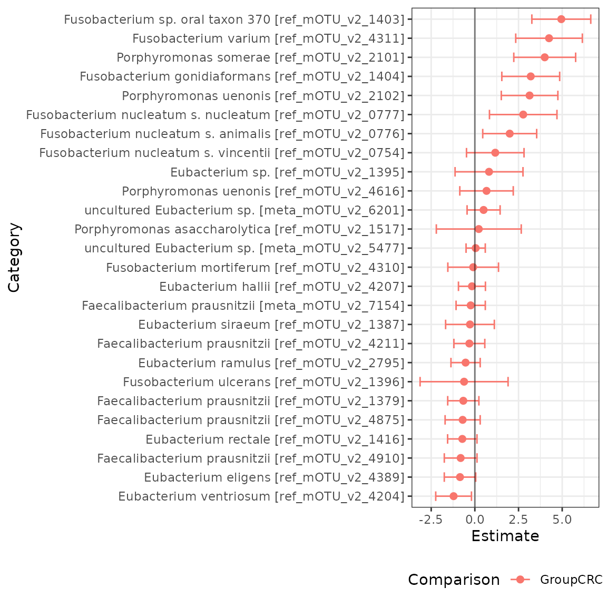

Introduction to radEmu with phyloseq
David Clausen, Sarah Teichman and Amy Willis
2024-10-24
Source:vignettes/intro_radEmu_with_phyloseq.Rmd
intro_radEmu_with_phyloseq.RmdFirst, we will install radEmu, if we haven’t
already.
# if (!require("remotes", quietly = TRUE))
# install.packages("remotes")
#
# remotes::install_github("statdivlab/radEmu")Next, we can load radEmu as well as the
tidyverse package suite.
Introduction
This vignette provides an introduction to using radEmu
for differential abundance analysis using a phyloseq data
object. For more in-depth explanations of how this software works and
details on this analysis, see the vignette “intro_radEmu.Rmd”.
In this lab we’ll explore a dataset published by Wirbel et al. (2019). This is a meta-analysis of case-control studies, meaning that Wirbel et al. collected raw sequencing data from studies other researchers conducted and re-analyzed it (in this case, they also collected some new data of their own).
Wirbel et al. published two pieces of data we’ll focus on today:
- metadata giving demographics and other information about participants
- a mOTU (metagenomic OTU) table
In the manuscript, we looked at differential abundance across otherwise similar colorectal cancer and non-cancer control study participants for the 849 mOTUs that Wirbel et al. published. For the purpose of having a streamlined tutorial, we will only look at a subset of those 849 mOTUs in this vignette.
Loading and exploring data
Note that in order to follow along with this tutorial (but not to use
radEmu!) you will need to have phyloseq
installed. We will check if you have phyloseq installed,
and if you do not then you can read the following code but it will not
be run.
phy <- requireNamespace("phyloseq", quietly = TRUE) == TRUE#> [1] "phyloseq is installed: TRUE"Now that we have loaded the phyloseq package, we will
create our phyloseq data object.
data(wirbel_sample)
data(wirbel_otu)
data(wirbel_taxonomy)
wirbel_phylo <- phyloseq::phyloseq(phyloseq::sample_data(wirbel_sample),
phyloseq::otu_table(wirbel_otu, taxa_are_rows = FALSE),
phyloseq::tax_table(wirbel_taxonomy))
wirbel_phylo
#> phyloseq-class experiment-level object
#> otu_table() OTU Table: [ 845 taxa and 566 samples ]
#> sample_data() Sample Data: [ 566 samples by 14 sample variables ]
#> tax_table() Taxonomy Table: [ 845 taxa by 7 taxonomic ranks ]We’ll start by looking at the metadata.
dim(phyloseq::sample_data(wirbel_phylo))
#> [1] 566 14
head(phyloseq::sample_data(wirbel_phylo))
#> Sample_ID External_ID Age Gender BMI Country Study
#> CCIS00146684ST.4.0 CCIS00146684ST-4-0 FR-726 72 F 25 FRA FR-CRC
#> CCIS00281083ST.3.0 CCIS00281083ST-3-0 FR-060 53 M 32 FRA FR-CRC
#> CCIS02124300ST.4.0 CCIS02124300ST-4-0 FR-568 35 M 23 FRA FR-CRC
#> CCIS02379307ST.4.0 CCIS02379307ST-4-0 FR-828 67 M 28 FRA FR-CRC
#> CCIS02856720ST.4.0 CCIS02856720ST-4-0 FR-027 74 M 27 FRA FR-CRC
#> CCIS03473770ST.4.0 CCIS03473770ST-4-0 FR-192 29 M 24 FRA FR-CRC
#> Group Library_Size Age_spline.1 Age_spline.2 BMI_spline.1
#> CCIS00146684ST.4.0 CTR 35443944 -0.19755428 0.7389621 1.18982420
#> CCIS00281083ST.3.0 CTR 19307896 -0.08126128 -0.6818534 -1.40679307
#> CCIS02124300ST.4.0 CTR 42141246 -2.17453529 -0.6818534 0.45476676
#> CCIS02379307ST.4.0 CRC 4829533 0.67464323 -0.1490476 0.07698823
#> CCIS02856720ST.4.0 CTR 34294675 -0.54643328 1.0941660 0.44793355
#> CCIS03473770ST.4.0 CTR 20262319 -2.87229329 -0.6818534 0.95261443
#> BMI_spline.2 Sampling
#> CCIS00146684ST.4.0 -0.5606919 BEFORE
#> CCIS00281083ST.3.0 2.0039136 BEFORE
#> CCIS02124300ST.4.0 -0.6706035 BEFORE
#> CCIS02379307ST.4.0 0.5384247 BEFORE
#> CCIS02856720ST.4.0 0.1720525 BEFORE
#> CCIS03473770ST.4.0 -0.6706035 BEFOREWe can see that this dataset includes observations and variables.
Now let’s load the mOTU table.
dim(phyloseq::otu_table(wirbel_phylo))
#> [1] 566 845
# let's check out a subset
phyloseq::otu_table(wirbel_phylo)[1:5, 1:3]
#> OTU Table: [3 taxa and 5 samples]
#> taxa are columns
#> Streptococcus anginosus [ref_mOTU_v2_0004]
#> CCIS00146684ST.4.0 0
#> CCIS00281083ST.3.0 0
#> CCIS02124300ST.4.0 2
#> CCIS02379307ST.4.0 0
#> CCIS02856720ST.4.0 1
#> Enterobacteriaceae sp. [ref_mOTU_v2_0036]
#> CCIS00146684ST.4.0 3
#> CCIS00281083ST.3.0 0
#> CCIS02124300ST.4.0 5
#> CCIS02379307ST.4.0 5
#> CCIS02856720ST.4.0 675
#> Citrobacter sp. [ref_mOTU_v2_0076]
#> CCIS00146684ST.4.0 0
#> CCIS00281083ST.3.0 0
#> CCIS02124300ST.4.0 0
#> CCIS02379307ST.4.0 0
#> CCIS02856720ST.4.0 0We can see that this table has samples (just like the metadata) and mOTUs. Let’s save these mOTU names in a vector.
Finally, we can check out the taxonomy table.
head(phyloseq::tax_table(wirbel_phylo))
#> Taxonomy Table: [6 taxa by 7 taxonomic ranks]:
#> domain phylum
#> Streptococcus anginosus [ref_mOTU_v2_0004] "Bacteria" "Bacillota"
#> Enterobacteriaceae sp. [ref_mOTU_v2_0036] "Bacteria" "Pseudomonadota"
#> Citrobacter sp. [ref_mOTU_v2_0076] "Bacteria" "Pseudomonadota"
#> Klebsiella michiganensis/oxytoca [ref_mOTU_v2_0079] "Bacteria" "Pseudomonadota"
#> Enterococcus faecalis [ref_mOTU_v2_0116] "Bacteria" "Bacillota"
#> Lactobacillus salivarius [ref_mOTU_v2_0125] "Bacteria" "Bacillota"
#> class
#> Streptococcus anginosus [ref_mOTU_v2_0004] "Bacilli"
#> Enterobacteriaceae sp. [ref_mOTU_v2_0036] "Gammaproteobacteria"
#> Citrobacter sp. [ref_mOTU_v2_0076] "Gammaproteobacteria"
#> Klebsiella michiganensis/oxytoca [ref_mOTU_v2_0079] "Gammaproteobacteria"
#> Enterococcus faecalis [ref_mOTU_v2_0116] "Bacilli"
#> Lactobacillus salivarius [ref_mOTU_v2_0125] "Bacilli"
#> order
#> Streptococcus anginosus [ref_mOTU_v2_0004] "Lactobacillales"
#> Enterobacteriaceae sp. [ref_mOTU_v2_0036] "Enterobacterales"
#> Citrobacter sp. [ref_mOTU_v2_0076] "Enterobacterales"
#> Klebsiella michiganensis/oxytoca [ref_mOTU_v2_0079] "Enterobacterales"
#> Enterococcus faecalis [ref_mOTU_v2_0116] "Lactobacillales"
#> Lactobacillus salivarius [ref_mOTU_v2_0125] "Lactobacillales"
#> family
#> Streptococcus anginosus [ref_mOTU_v2_0004] "Streptococcaceae"
#> Enterobacteriaceae sp. [ref_mOTU_v2_0036] "Enterobacteriaceae"
#> Citrobacter sp. [ref_mOTU_v2_0076] "Enterobacteriaceae"
#> Klebsiella michiganensis/oxytoca [ref_mOTU_v2_0079] "Enterobacteriaceae"
#> Enterococcus faecalis [ref_mOTU_v2_0116] "Enterococcaceae"
#> Lactobacillus salivarius [ref_mOTU_v2_0125] "Lactobacillaceae"
#> genus
#> Streptococcus anginosus [ref_mOTU_v2_0004] "Streptococcus"
#> Enterobacteriaceae sp. [ref_mOTU_v2_0036] "Enterobacteriaceae"
#> Citrobacter sp. [ref_mOTU_v2_0076] "Citrobacter"
#> Klebsiella michiganensis/oxytoca [ref_mOTU_v2_0079] "Klebsiella"
#> Enterococcus faecalis [ref_mOTU_v2_0116] "Enterococcus"
#> Lactobacillus salivarius [ref_mOTU_v2_0125] "Lactobacillus"
#> species
#> Streptococcus anginosus [ref_mOTU_v2_0004] "Streptococcus anginosus"
#> Enterobacteriaceae sp. [ref_mOTU_v2_0036] "Enterobacteriaceae bacterium"
#> Citrobacter sp. [ref_mOTU_v2_0076] "Citrobacter sp."
#> Klebsiella michiganensis/oxytoca [ref_mOTU_v2_0079] "Klebsiella michiganensis"
#> Enterococcus faecalis [ref_mOTU_v2_0116] "Enterococcus faecalis"
#> Lactobacillus salivarius [ref_mOTU_v2_0125] "Ligilactobacillus salivarius"Fitting a model
radEmu is a package that can be used to estimate
fold-differences in the abundance of microbial taxa between levels of a
covariate. In this analysis, the covariate that we are primarily
interested in is whether a sample is from a case of colorectal cancer or
a control. We will make control (“CTR”) the reference category:
phyloseq::sample_data(wirbel_phylo)$Group <- factor(phyloseq::sample_data(wirbel_phylo)$Group, levels = c("CTR","CRC"))While in general we would fit a model to all mOTUs, we are going to subset to some specific genera for the purposes of this tutorial. Let’s look at Eubacterium, Porphyromonas, Faecalibacteria, and Fusobacterium for now.
chosen_genera <- c("Eubacterium", "Faecalibacterium", "Fusobacterium", "Porphyromonas")
wirbel_restrict <- phyloseq::subset_taxa(wirbel_phylo, genus %in% chosen_genera)Again, while we would generally fit a model using all of our samples, for this tutorial we are only going to consider data from a case-control study from China.
wirbel_china <- phyloseq::subset_samples(wirbel_restrict, Country == "CHI")Next, we want to confirm that all samples have at least one non-zero count across the categories we’ve chosen and that all categories have at least one non-zero count across the samples we’ve chosen.
sum(rowSums(phyloseq::otu_table(wirbel_china)) == 0) # no samples have a count sum of 0
#> [1] 0
sum(colSums(phyloseq::otu_table(wirbel_china)) == 0) # one category has a count sum of 0
#> [1] 1
category_to_rm <- names(which(colSums(phyloseq::otu_table(wirbel_china)) == 0))
wirbel_china <- phyloseq::subset_taxa(wirbel_china, species != category_to_rm)
sum(colSums(phyloseq::otu_table(wirbel_china)) == 0) # now no categories have a count sum of 0
#> [1] 0The function that we use to fit our model is called
emuFit. It can accept your data in various forms, and here
we will show how to use it with a phyloseq object as
input.
ch_fit <- emuFit(formula = ~ Group,
Y = wirbel_china,
run_score_tests = FALSE) The way to access estimated coefficients and confidence intervals
from the model is with ch_fit$coef. Let’s plot our
results:
ch_df <- ch_fit$coef %>%
mutate(Genus = as.vector(phyloseq::tax_table(wirbel_china)[, 6])) %>%
# add genus name to output from emuFit
mutate(cat_small = stringr::str_remove(paste0("mOTU_",
stringr::str_split(category, 'mOTU_v2_', simplify = TRUE)[, 2]),
"\\]")) %>%
mutate(cat_small = factor(cat_small, levels = cat_small[order(Genus)]))
# reorder mOTU categories by genus
ggplot(ch_df) +
geom_point(aes(x = cat_small, y = estimate, color = Genus), size = .5) +
geom_errorbar(aes(x = cat_small, ymin = lower, ymax = upper, color = Genus), width = .25) +
theme_bw() +
theme(axis.text.x = element_text(angle = 45, hjust = 1)) +
labs(x = "Category",
y = "Estimate") +
coord_cartesian(ylim = c(-5,10))
If you’d like to see more explanations of the radEmu
software and additional analyses of this data, check out the vignette
“intro_radEmu.Rmd”.